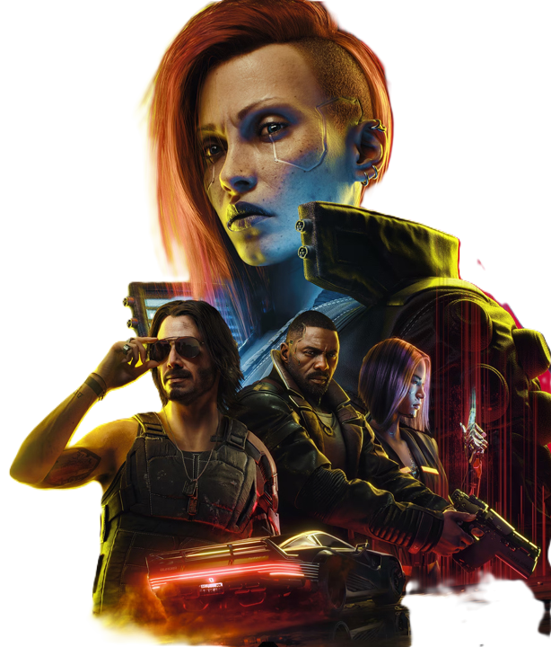

Cyberpunk 2077 est un jeu vidéo de rôle en monde ouvert développé par CD
Projekt RED, les créateurs de la saga The Witcher. Inspiré du jeu de
rôle papier Cyberpunk 2020, il plonge les joueurs dans Night City, une
mégalopole futuriste et dystopique où règnent les corporations, les
gangs, et les technologies transhumanistes. Vous incarnez V, un
mercenaire personnalisable, qui cherche à s'emparer d'un implant
légendaire censé offrir l'immortalité. Le jeu propose une narration
riche, des quêtes variées, et une liberté d'approche impressionnante, le
tout dans une ambiance immersive.En tant que passionné de l'univers
cyberpunk, j'ai trouvé l'expérience absolument captivante. Ce qui a
vraiment renforcé mon immersion, c'est d'avoir joué au jeu tout en
regardant l'anime Cyberpunk: Edgerunners. Les deux œuvres se complètent
à merveille !